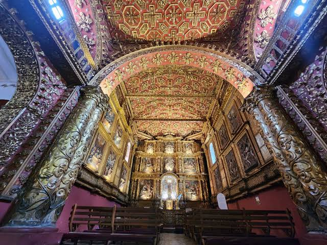

Es la capilla más conocida del templo. Lonely Planet la presenta como la «Capilla Sixtina del arte neogranadino» por la riqueza de su decoración. Es importante porque reúne pintura y talla dorada del periodo colonial.
Fuente: Lonely Planet; Corradine Angulo (Apuntes, Javeriana).